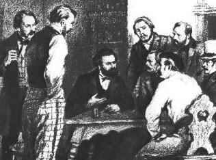

|  |
Study Guide for |
Section 1. Preface
People: Hegel, Weitling, Feuerbach.
Terms: Law, Ethics, Politics, Utopia, Abstract, Critique, Dialectics, Positive, Mediation, Self-Consciousness.
Questions for discussion:
1. Marx accuses certain “critical theologians” of either setting out from certain authoritative presuppositions, or doubting these presuppositions, abstracting from them. What does Marx mean by this?
2. What do you think Marx means by “criticism”?
Section 2. Wages of Labour
People: Adam Smith.
Terms: Wages, Proletariat, Commodity, Market, Division of Labour, Political Economy, Business Cycle.
Questions for discussion:
1. What is a proletarian?
2. Where does this idea of wages as the cost of living of a worker come from?
3. What is meant by “abstract labour”?
4. How would you sum up Marx's attitude to the political economists?
Section 3. Profit of Capital
People: David Ricardo.
Terms: Capital, Private Property, Concentration of Capital, Over-production and Under-consumption.
Questions for discussion:
1. What does it mean: “Capital is thus the governing power over labour and its products” and “the governing power of capital over the capitalist himself”?
2. What do you make of Marx's criticism of business secrecy, adulteration of products, profiting from poverty, monopoly pricing and people whose interests are opposed to that of the public?
Section 4. Rent of Land
People: Physiocrats.
Terms: Rent, Wealth, Feudal Society, .
Questions for discussion:
1. What are the two ways that Marx sees the downfall of landed property?
2. How does Marx connect the fate of feudalism to the fate of landed property?
Section 5. Estranged Labour
People: Proudhon,
Terms: Chance and Necessity, Exchange, Objectification, Alienation, Labour, Nature, Means and Ends, Wage Labour, Spiritual, Genus (Species), Essence, Consciousness, Economics, Being, God, Reality, Cause and Effect, Property, Practice and Theory.
Questions for discussion:
1. “Political economy proceeds from the fact of private property. It does not explain it.” Can you justofy this statement?
2. Can you think of an example of explaining things “on some imaginary primordial condition”? and what has this to do with the Fall of Man? Isn't the rupture of tribal society into classes an example of this?
3. Is there a necessary relation between division of labour and exchange?
4. Why is it that a worker becomes poorer, the more welath he produces?
5. Isn't the objectification of human powers a good thing, something essential to developing an identity and for people to gain the recognition of other people? Why and how does objectification become alienation?
6. What does Marx mean by “Political economy conceals the estrangement in the nature of labour by ignoring the direct relationship between the worker (labour) and production”?
7. Why is a worker alienated, not just from the product of her labour, but from herself? And is this true of all workers?
8. How does Marx prove the alienation of man from Nature?
9. In the context of this chapter, what do you make of the struggle for a shorter working week? And what about wage increaases?
10. What does it mean: “Consciousness, which man has from his species ...”?
11. What point is Marx making about private property when he says: “just as the gods were originally not the cause but the effect of the confusion in men's minds”?
12. Why does emancipation of the working class mean “universal human emancipation”?
13. What concretely does Marx mean by the practical attiutude of the workers, and the theoretical attitude of the non-worker? What then are “theory” and “practice”?
Section 6. Antithesis of Capital and Labour. Landed Property and Capital
Terms: External and Externalisation, Labour-power, Consumer, Bourgeoisie.
Questions for discussion:
1. In what way does Marx describe a progressive role for capital in this chapter?
2. What does Marx mean by saying: “The capitalist is completely sacrificed. He falls into the working class, whilst the worker (but only exceptionally) becomes a capitalist”?
Section 7. Private Property and Labour
Terms: Subjective, Substance, Labour Theory of Value, Particular, Science.
Questions for discussion:
1. How would you sum up what Marx is saying about Adam Smith's Labour Theory of Value?
2. Can you justify the Physiocrats' argument that agricultural labour is the only productive labour? and how do the political economists refute the Physiocrats?
3. “These later economists also advance in a positive sense constantly and consciously further than their predecessors in their estrangement from man. They do so, however, only because their science develops more consistently and truthfully”. If you agree with what Marx is saying about the political economists, what would you make of modern economic science?
Section 8. Private Property and Communism
People: Fourier, Saint-Simon.
Terms: Contradiction, Communism, Objectivity, Matter, Universal, Negation of the Negation, Production and Consumption, Community, Humanism, Naturalism, State, Democracy, Freedom, Genetic Exposition, Atheism, Individualism, Society, Determinate, Empiricism, Anthropologism, Poverty, Genus, God.
Questions for discussion:
1. What does Marx mean by the antithesis between property and lack of property being established by private property itself?
2. What criticisms does he make of the abolition of capital "as such", and of "levelling down" of private property?
3. What are the three forms of communism Marx enumerates?
4. Marx takes the relation of man to woman as the most natural human relation, and makes a comparison of the liberation of women from marriage with the crude abolition of private property. How would you explain this?
5. “Communism, as fully developed naturalism, equals humanism” – what does this mean?
6. What is meant by communism seeking proof for itself in the past? and what's the problem with this?
7. “The entire revolutionary movement necessarily finds both its empirical and its theoretical basis in the movement of private property – more precisely, in that of the economy” – how can this be reconciled with the very humanist statements and attacks on political economy made earlier?
8. Is Marx an atheist?
9. “When I am active scientifically, etc. – an activity which I can seldom perform in direct community with others – then my activity is social, because I perform it as a man” How can this statement be justified?
10. “The senses have therefore become directly in their practice theoreticians” What does this mean?
11. “Subjectivity and objectivity, spirituality and materiality, activity and suffering, lose their antithetical character” – Can you prove this in each specific case?
12. What sort of psychology would it be that really built on the idea of industry as “perceptibly existing human psychology”?
13. “Man is the immediate object of natural science” Can you justify this, or is Marx exaggerating?
Section 9. Human Needs & Division of Labour Under Private Property
Terms: Mode of Production, Poverty, Customer, Quantity and Quality, Production and Consumption, Ethics, Virtue, Religion, Appearance, Productive Labour, Mechanisation, Equality, Means and Ends, Civil Society, Language, Distribution and Exchange.
Questions for discussion:
1. How does the reversal take place: from people manipulating each other by ceating new needs, to the enrichment of human nature through the “wealth of human needs”?
2. “The need for money is therefore the true need” – is this true?
3. The paragraph about selling my friends to the Morrocans: marx counterposes ethics to economics to religion, etc. What is the alternative? Is there a common yarstick?
4. “The extent to which the solution of theoretical riddles is the task of practice and effected through practice, the extent to which true practice is the condition of a real and positive theory” – can you give examples demonstrating this?
5. What does Marx mean by communism as the negation of negation through the intermediary of private property?
6. What is estrangement?
7. What is the relation between division of labour and exchange, between division of labour and human capacities, between division of labour and human needs? and private property?
Section 10. The Power Of Money
Terms: Ontology, Being, Object and Subject, Possession, Money.
Questions for discussion:
1. What does Marx mean by the contrast between human feelings in the ontological sense and the anthropological sense?
2. ... and how does this lead to “private property ... the existence of essential objects for man”
3. “Money is for me the other person”, “the visible divinity”?
4. “money is the general distorting of individualities”?
5. “Assume man to be man and his relationship to the world to be a human one: then you can exchange love only for love, trust for trust, etc.” – but surely such a society would be reduced to barter? and step backward! What is Marx's vision here?
Section 11. Critique of the Hegelian Dialectic and Philosophy as a Whole
People: Ludwig Feuerbach. Bruno Bauer, Max Stirner, Young Hegelians,
Terms: Phenomenology, Logic, Dialectics, Form and Content, Mass, Dogmatism, Scepticism, Speculative Logic, Consciousness, Self-Consciousness, Reason, Mind, Absolute Idea, Reality, Anthropologism, In-itself, For itself, For Us, Semblance, Opposition, Objectification, Sublation (Supersession), Negation, Absolute, Objectivity, Phenomenon (Manifestation), Thing, Naturalism, Positivism, Law, Morality, Measure, Actuality, Notion (Concept), Subject, Intuition, Transition, Reflection.
Questions for discussion:
1. What contribution did Hegel make to criticism?
2. For what does Marx give credit to Feuerbach in his criticism of Hegel?
3. What does Marx mean by: “The philosopher takes himself as the criterion of the estranged world”
4. In the early Hegel Marx sees: “The appropriation of man's essential powers, which have become objects ... only an appropriation occurring in consciousness” while “the equally uncritical idealism of Hegel's later works - that philosophic dissolution and restoration of the existing empirical world”. Can you explain what is meant by these two criticisms?
5. What does Marx refer to with “the vindication of the objective world for man - for example, the realisation that ... that religion, wealth, etc., are but the estranged world of human objectification”?
6. Explain: “Hegel’s standpoint is that of modern political economy”
7. Marx says that for Hegel the subject is not real man. Is it possible to make the same criticism of modern social and natural science?
8. “Here we see how consistent naturalism or humanism is distinct from both idealism and materialism, and constitutes at the same time the unifying truth of both” What do you make of this statement? Doesn't this fly in the face of Marxism?
9. In what way does Marx reject the proposition of “reason is at home in unreason”?
10. “Only through the supersession of this mediation - which is itself, however, a necessary premise - does positively self-deriving humanism, positive humanism, come into being” Exaplin.
11. If the bearer is not God, Asbsolute Spirit who or what is? and what is this about subject and predicate?
12. What is meant by saying “Nature is Nothing”?
13. On the basis of everything you have read here, how would explain the extent to which Marx subsequently dedicated himself to the study of political economy?
Commentaries on the 1844 Manuscripts
Freedom and Fetishism, Marshall Berman, 1963
Marx's Theory of Alienation, Istvan Meszaros, 1970
Marx's Ethic of Freedom, George Brenkert, 1983
The Standpoint of Socialised Humanity, Cyril Smith, 1998
Preface from Progress Publishers
Andy Blunden, 2002